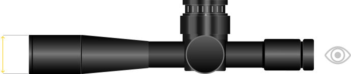
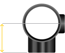

Калькулятор высоты кольца прицела
Калькулятор
Калькулятор высоты кольца прицела и зазора
Воспользуйтесь этим простым калькулятором, чтобы выяснить, сможет ли используемая вами комбинация оптического прицела и кольца очистить ствол вашей винтовки при установке. Этот калькулятор учитывает использование крышек прицела Butler Creek, а также крепления прицела для традиционных болтовых винтовок.


Установите 0, если используется полный рельс в стиле AR, например, Larue OBR, DTA SRS. Кроме того, если у вас конусообразный ствол, добавьте дополнительный прирост высоты.
Наклон 20 МОА и 6 дюймов между передней частью прицела и креплением может уменьшить высоту крепления на 0,89 мм. Найдите свое смещение.
Зазор: высота крепления + высота кольца - (диаметр раструба / 2) - защитная пленка = 6,50 мм (0,26 дюйма)
Примечание. Это рекомендация.
Примечание. Это рекомендация.